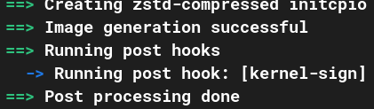

Questa mini guida richiede di essere già in possesso delle chiavi KEK,DB,PK e aver già fatto l'enrolling nel BIOS nella
modalità Setup del SecureBoot.
A questo punto dobbiamo creare uno script in bash che vada a firmare il kernel ogni qual volta che quest'ultimo viene
aggiornato. Se non facciamo ciò bisognerà ripetere la procedura di firma manualmente usando sbsign.
Per il kernel ci serve solo una chiave, la DB ".key" con il suo relativo certificato ".crt", queste dovranno essere messe
in un percorso fisso.
Per prima cosa dobbiamo capire dove andrà messo il file contente lo script. Quest'ultimo andrà creato nella directory
"/etc/initcpio/post/
Arrivati a questo punto dobbiamo scrivere il seguente codice:
#!/usr/bin/env bash
kernel="$1"
[[ -n "$kernel" ]] || exit 0
# use already installed kernel if it exists
[[ ! -f "$KERNELDESTINATION" ]] || kernel="$KERNELDESTINATION"
keypairs=(/path/to/db.key /path/to/db.crt)
for (( i=0; i<${#keypairs[@]}; i+=2 )); do
key="${keypairs[$i]}" cert="${keypairs[(( i + 1 ))]}"
if ! sbverify --cert "$cert" "$kernel" &>/dev/null; then
sbsign --key "$key" --cert "$cert" --output "$kernel" "$kernel"
fi
done
riassuntivamente, il codice, nella prima parte verifica che gli sia stato passato un paramentro "kernel" e ne ricava la path,
successivamente viene definito un array contente le chiavi e i certificati. A questo punto vi starete chiedendo perchè un for,
ebbene il for serve nel caso io abbia più chiavi db con relativi certificati, infatti le prende a coppie, verifica che il kernel
non sia gia stato firmato con quelle chiavi e eventualmente lo firma.
Se non si necessita di usare più chaivi di db si può usare il seguente codice:
#!/usr/bin/env bash
kernel="$1"
[[ -n "$kernel" ]] || exit 0
# use already installed kernel if it exists
[[ ! -f "$KERNELDESTINATION" ]] || kernel="$KERNELDESTINATION"
cert=/path/to/db.crt
key=/path/to/db.key
if ! sbverify --cert "$cert" "$kernel" &>/dev/null; then
sbsign --key "$key" --cert "$cert" --output "$kernel" "$kernel"
fi
Una volta creato il file basta dare il permesso di esecuzione con "sudo chmod +x <nomefile>", posso eseguire mkinitcpio per verificare se lo script viene eseguito correttamente:
